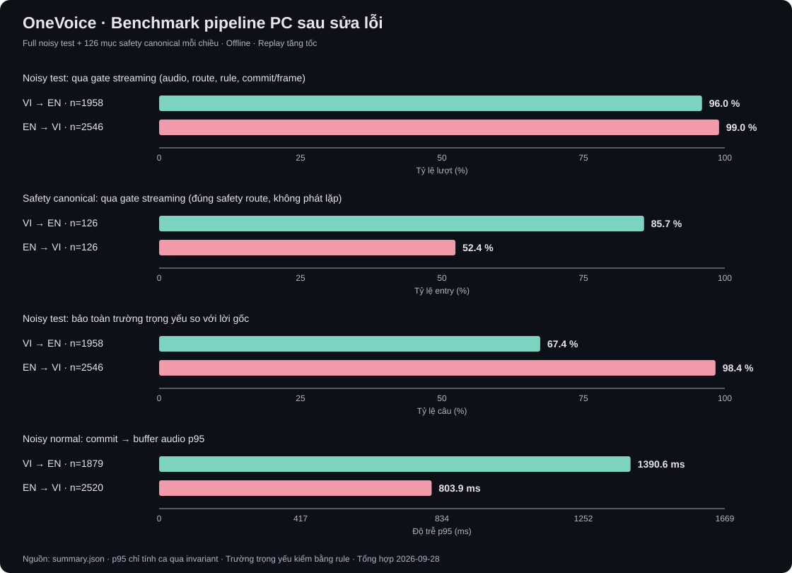

OneVoice · PC offline sau sửa lỗi
Full noisy test, safety canonical và TTS đúng ngôn ngữ đầu ra. Đây là số đo của runtime đang dùng trên Windows.
Đo đã hoàn tất; còn 183 lượt không qua gate chức năng. Đây chưa phải nghiệm thu chất lượng sản phẩm.

VI → EN
Commit a34118afeaad · windows-sapi-offline · Microsoft David Desktop · policy endpoint
| Corpus | Mẫu | Qua invariant | ASR WER | Trường trọng yếu | Commit→audio p95 |
|---|---|---|---|---|---|
| test_noisy | 1958 | 1879/1958 | 11.81% | 67.36% | 1,390.6 ms |
| approved_safety | 126 | 108/126 | 5.73% | 91.27% | 4.0 ms |
TTS 979/979 câu đúng ngôn ngữ (en) · p95 427.3 ms. P5 input cố định: PASS budget desktop.
Lỗi chức năng đầu tiên
vi2en-test-noisy-00167· RuntimeError: Streaming latency report is emptyvi2en-test-noisy-00168· RuntimeError: Streaming latency report is emptyvi2en-test-noisy-00257· RuntimeError: Translation critical-field validator rejected this stream turnvi2en-test-noisy-00258· RuntimeError: Translation critical-field validator rejected this stream turnvi2en-test-noisy-00274· RuntimeError: Streaming latency report is emptyvi2en-test-noisy-00315· RuntimeError: Translation critical-field validator rejected this stream turnvi2en-test-noisy-00316· RuntimeError: Translation critical-field validator rejected this stream turnvi2en-test-noisy-00342· RuntimeError: Streaming latency report is emptyvi2en-test-noisy-00358· RuntimeError: Translation critical-field validator rejected this stream turnvi2en-test-noisy-00381· RuntimeError: Streaming latency report is empty
EN → VI
Commit a34118afeaad · espeak-ng-offline-demo · giọng VI local · policy endpoint
| Corpus | Mẫu | Qua invariant | ASR WER | Trường trọng yếu | Commit→audio p95 |
|---|---|---|---|---|---|
| test_noisy | 2546 | 2520/2546 | 1.21% | 98.35% | 803.9 ms |
| approved_safety | 126 | 66/126 | 14.76% | 100.00% | 3.6 ms |
TTS 976/979 câu đúng ngôn ngữ (vi) · p95 91.9 ms. P5 input cố định: PASS budget desktop.
Lỗi chức năng đầu tiên
en2vi-test-noisy-00297· RuntimeError: Translation critical-field validator rejected this stream turnen2vi-test-noisy-00298· RuntimeError: Translation critical-field validator rejected this stream turnen2vi-test-noisy-00541· RuntimeError: Translation critical-field validator rejected this stream turnen2vi-test-noisy-00542· RuntimeError: Translation critical-field validator rejected this stream turnen2vi-test-noisy-00661· RuntimeError: Translation critical-field validator rejected this stream turnen2vi-test-noisy-00662· RuntimeError: Translation critical-field validator rejected this stream turnen2vi-test-noisy-00729· RuntimeError: Streaming latency report is emptyen2vi-test-noisy-00730· RuntimeError: Streaming latency report is emptyen2vi-test-noisy-01105· RuntimeError: Translation critical-field validator rejected this stream turnen2vi-test-noisy-01106· RuntimeError: Translation critical-field validator rejected this stream turn
EN safety qua rule reference 100% nhưng còn lượt FAIL safety gate. Rule chưa bao phủ đủ nghĩa cảnh báo; 100% này không phải độ chính xác safety.
Các lỗi TTS
OV2_002585· RuntimeError: clipping peak=0.999969OV2_007251· RuntimeError: clipping peak=0.999908OV2_007330· RuntimeError: clipping peak=0.999908
Phạm vi đo
PC Windows offline, replay tăng tốc WAV tổng hợp và TTS hệ thống cục bộ. Thời gian tạo buffer audio không gồm driver hoặc truyền Bluetooth. Trường trọng yếu được đối chiếu với văn bản gốc bằng rule; chưa phải đánh giá ngữ nghĩa của người nghe.
Qua invariant kiểm tra audio/route/frame/commit và cảnh báo rule runtime theo ASR. Chất lượng theo lời gốc được ghi riêng, gồm cả lỗi và output bị chặn. p95 chỉ tính các ca qua invariant chức năng; không bao gồm driver/tai nghe. Giọng VI và mic live cần kiểm thử người nghe riêng.
WER ASR ở đây lấy hypothesis endpoint sau chuẩn hóa của pipeline, không phải raw ASR benchmark. Trường trọng yếu được kiểm bằng rule, không phải độ chính xác ngữ nghĩa.
Nguồn: summary.json đầy đủ · Markdown chi tiết · Lỗi còn lại và hướng xử lý · Tạo lúc 2026-09-28T12:57:27.899339+00:00